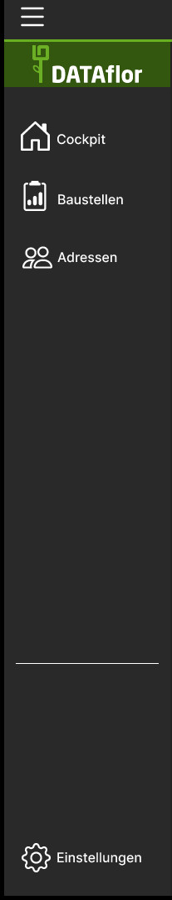
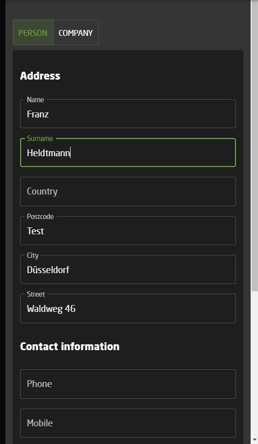

DATAflor Web Style Guide
Table of contents
Components - WebApp building blocks
AppBar

An AppBar is the header of the current page. It contains information about the user and the organization he is part of. It also has a hamburger button on the top left corner.
The AppBar is a global Component. This means that it offers the same options globally and is independent of the page content.
Rules
- The AppBar has a fixed height of 64 pixel
- Has two avatar elements. one for the user and one for the organization
- Has a hamburger button on the left side
- Is attached to the top of the screen
Navigation-Drawer
A navigation drawer is a menu which stretches over the left side of the screen. It's content depends on the page you are on. This means that you have certain options on certain pages.
Rules
- The navigation drawer can be folded in and out via the hamburger button
- It has a DATAflor logo at the top
- Has multiple buttons which navigate to different pages (depending on the current page)
- Has a separator between option and navigation button
- Has a button at the bottom which navigates to the options
Detail-Drawer
Detail drawers are used in a lot of different situations. First and foremost, these drawers are used to display details to certain data. E.g. we are on our contact page and want to see more information to a specific contact, so we click on a contact and the detail drawer opens on the right side of the screen. But we also use it to create or manipulate data. In this case the drawer will get a button to save the data.
Rules
- The detail drawer can be folded in and out. Click on a table row and it opens. by clicking a random spot on the screen you can close it
- The drawer overlaps components underneath it
- The content of the drawer is a single component. All elements are wrapped in a "Card" element
- In case of creating data, the drawer will get a save-button and functions as a input mask
Elements - Basic elements to create composed components
...tbd... (work in progress: Philipp)
▲